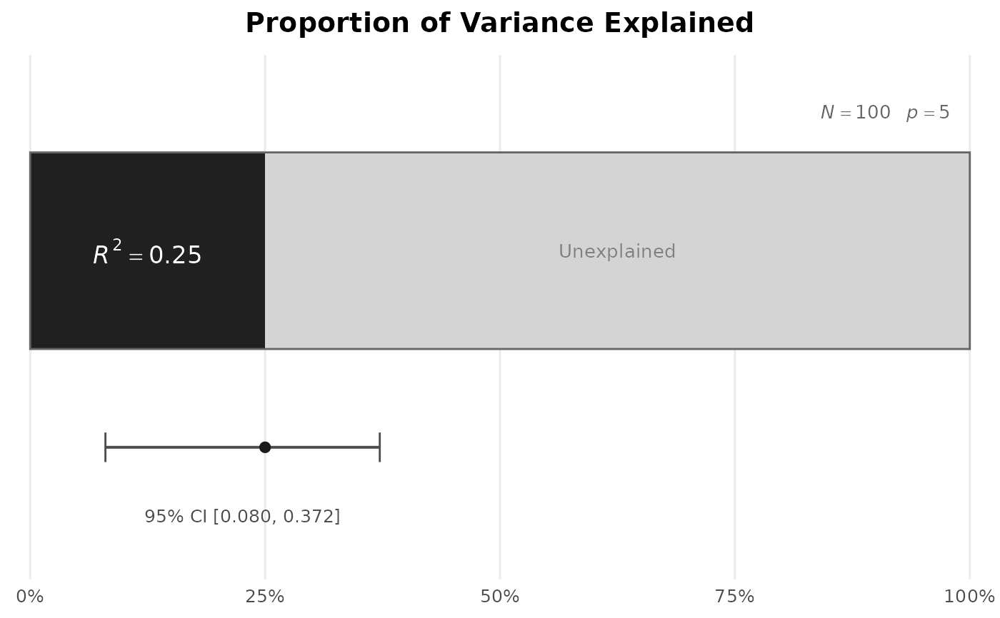
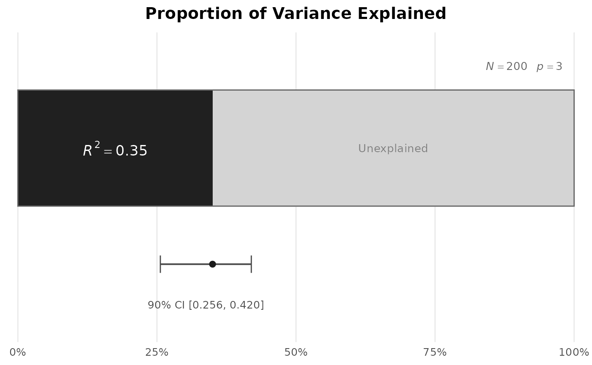
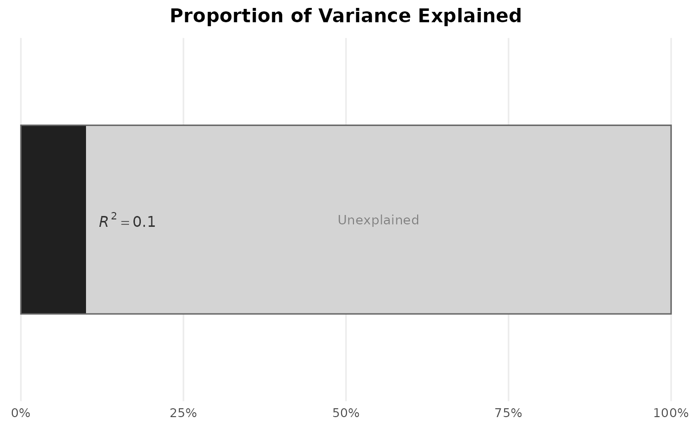

Creates a horizontal bar chart showing the observed \(R^2\) as a proportion of total variance, with an optional confidence interval displayed beneath the bar and sample size / predictor-count annotations.
Usage
plot_R2(
R2,
N = NULL,
p = NULL,
conf_level = 0.95,
show_ci = TRUE,
show_n = TRUE,
random_predictors = TRUE,
title = NULL,
palette = "okabe_ito",
colors = NULL
)Arguments
- R2
The observed squared multiple correlation coefficient (\(0 \le R^2 \le 1\)).
- N
Total sample size.
- p
Number of predictors.
- conf_level
Confidence level for the confidence interval (default
0.95).- show_ci
Logical. If
TRUE(the default), a confidence interval is shown beneath the proportion bar. Requires bothNandp.- show_n
Logical. If
TRUE(the default),Nandpare annotated on the plot.- random_predictors
Logical. Whether the predictors are random (
TRUE, the default) or fixed. Passed toci_R2.- title
Optional plot title.
- palette
Character string naming the color palette used for the “Explained” portion of the bar when
colorsisNULL. Defaults to"okabe_ito", base R's colorblind-safe Okabe-Ito palette;"tableau"is also available.- colors
Optional character vector of length 2: the first color fills the “Explained” portion of the bar, the second the “Unexplained” portion. When
NULL(the default), the “Explained” portion uses the first color ofpaletteand the “Unexplained” portion a neutral light gray.
References
Kelley, K. (2008). Sample size planning for the squared multiple correlation coefficient: Accuracy in parameter estimation via narrow confidence intervals. Multivariate Behavioral Research, 43, 524–555. doi:10.1080/00273170802490632
Maxwell, S. E., Delaney, H. D., & Kelley, K. (2027). Designing experiments and analyzing data: A model comparison perspective (4th ed.). Routledge. (See Chapter 3 on \(R^2\) as a model comparison effect size.)
Author
Ken Kelley kkelley@nd.edu
Examples
# \donttest{
# Basic call.
plot_R2(R2 = 0.25, N = 100, p = 5)

# With fixed predictors and a 90% CI.
plot_R2(R2 = 0.35, N = 200, p = 3, conf_level = 0.90,
random_predictors = FALSE)

# Without annotations.
plot_R2(R2 = 0.10, show_ci = FALSE, show_n = FALSE)

# }